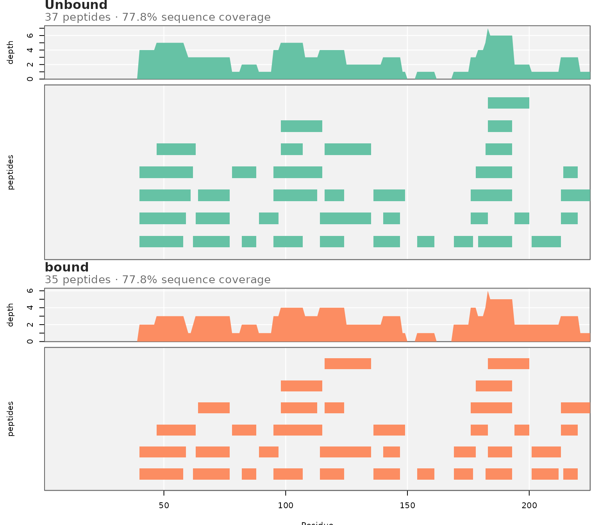
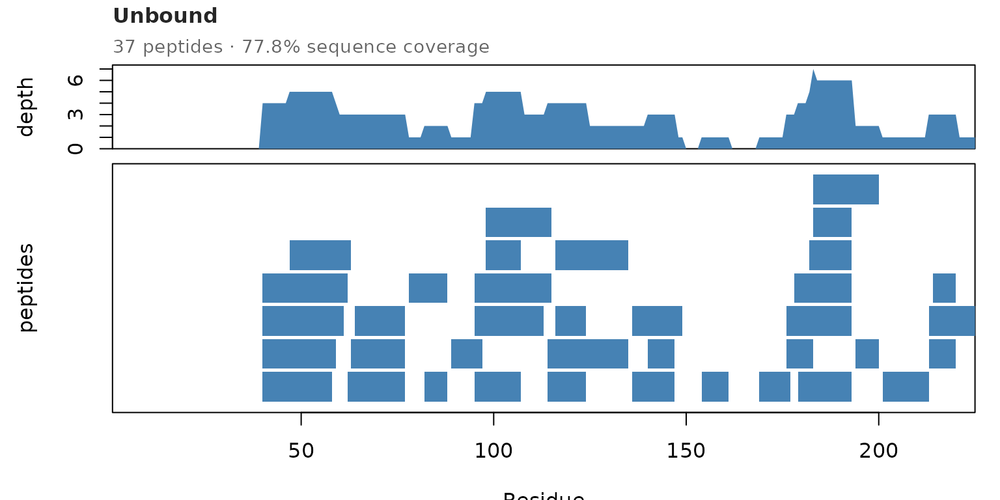

Data Quality: Coverage, Redundancy, and Back-Exchange
Maria K. Janowska
2026-11-05
Source:vignettes/data_quality.Rmd
data_quality.RmdCheck the data before comparing states. States can only be compared where both were measured well.
library(HDXBoxeR)
file_nm <- system.file("extdata", "All_results_table.csv", package = "HDXBoxeR")Summary tables
general_info() gives, per state, the number of peptides,
sequence coverage, average peptide length, and redundancy (how many
peptides cover an average residue):
general_info(file_nm)
#> Protein.State Timepoints # replicates # peptides
#> Unbound Unbound 3.00s 60.00s 1800.00s 72000.00s 3 37
#> bound bound 3.00s 60.00s 1800.00s 72000.00s 3 34
#> peptide coverage % <Peptide Length> <Redundancy>
#> Unbound 94.09 13.86 2.93
#> bound 94.09 13.29 2.58Low coverage means part of the sequence was not measured. No significant difference there means “not measured”, not “no change”. Low redundancy means a residue is covered by few peptides, so one bad peptide is not cross-checked.
backHX_calculations() gives the back-exchange per state.
It uses the undeuterated (0s) and fully deuterated
(FD) controls, and the measured centroids (m/z x
charge):
backHX_calculations(file_nm)
#> <BackHX> BackHX Range From To
#> Unbound 27.01 1.31 51.48
#> bound 35.44 11.73 99.88
#> attr(,"method")
#> [1] "measured centroid (Exp Cent) x Charge: 1 - (m_FD - m_0s)/N/Dfact"Very different back-exchange between states can bias the comparison.
Peptide coverage map
plot_peptide_coverage_map() shows where the peptides
are: redundancy on top, the peptide map below, one panel per state.
plot_peptide_coverage_map(file_nm)
Gaps are regions without data. A gap in one state but not the other is worth noting before comparing those regions.
The look of the plot can be changed:
plot_peptide_coverage_map(file_nm, states = "Unbound", palette = "steelblue",
bg = "white", show_grid = FALSE, block_height = 0.9)
-
palette: one color, or an RColorBrewer palette name. -
bg,grid_col,show_grid: background and grid lines. -
row_gap: space between peptides in one row. -
block_height,block_border: peptide block size and outline.
Peptide checks
peptide_qc() flags peptides with missing controls,
uptake of 0 at every time point, negative uptake, or odd FD values. It
does not remove anything.
qc <- peptide_qc(file_nm)
qc[qc$issues != "", c("Protein.State", "Start", "End", "Sequence", "issues")]
#> Protein.State Start End Sequence
#> 27 bound 182 193 IWNKTASDQATT
#> 65 Unbound 182 193 IWNKTASDQATT
#> issues
#> 27 no undeuterated control; uptake 0 at every time; FD uptake <= 0
#> 65 no undeuterated control; uptake 0 at every time; FD uptake <= 0In this example, peptide 182-193 has no undeuterated control, so HDXExaminer reports its uptake as 0.
How this connects to the rest of the package
| Question | Use |
|---|---|
| Summary table for a paper (Masson et al. 2019) | hdx_summary_table() |
| Everything in one HTML report | render_report() |
| Correct for back-exchange |
output_tp(percent = "FD")
(vignette("input_formats")) |
| States with different peptide maps |
compare_states_unmatched() and its
coverage table (vignette("multistate")) |
| Residues covered by several peptides |
residue_regions() uses this redundancy
(vignette("multistate")) |